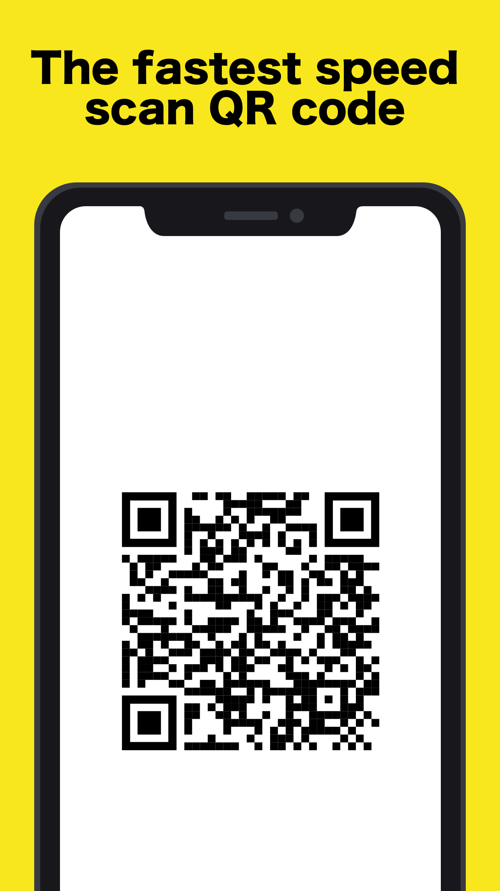
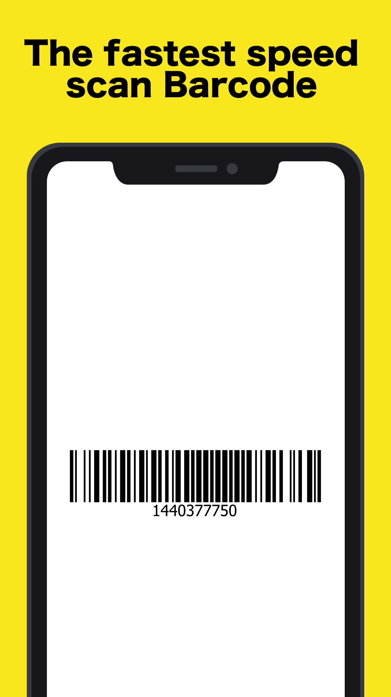
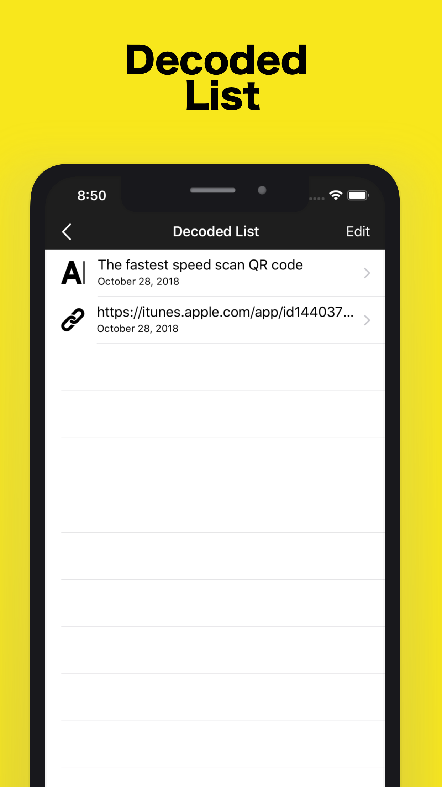
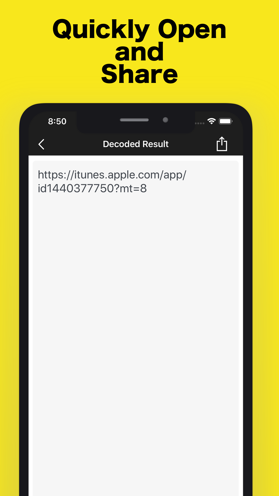
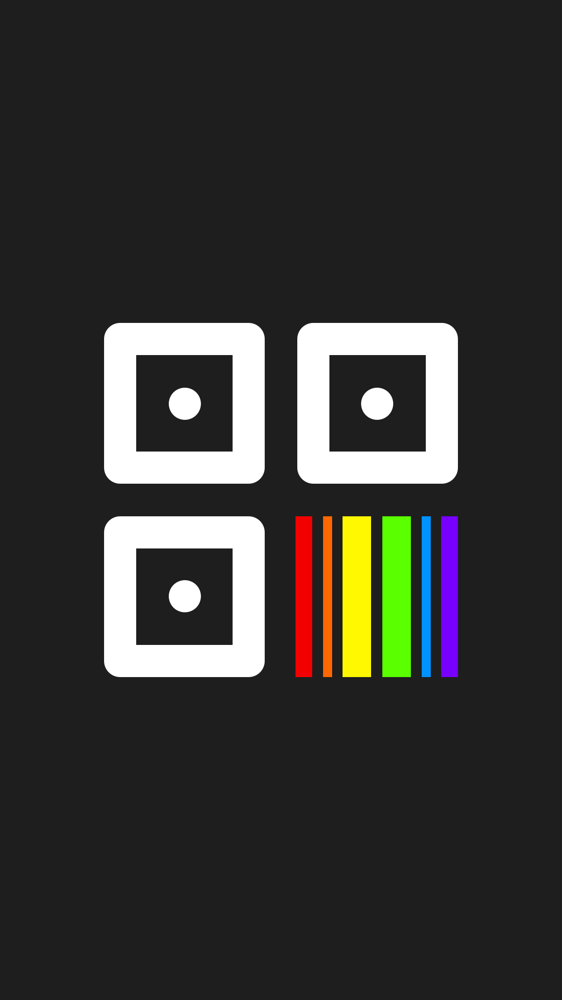

The easiest and fastest QR Code and Barcode Reader.
More than 15 types supported : QR Code, Barcode, Datamatrix, Code128, Code39, EAN-8, EAN-13, Google Auth
Complete Scanner Features:
- Scan all kinds of QR codes
- Scan product barcodes
- Save your scans in History
- Share codes via SMS, Email, Twitter, and Facebook
Scan QR codes for: URLs, Phone Numbers, Text Notes, Locations, Email Addresses, Contacts, SMS Messages, Calendar Events, and Wireless Networks.